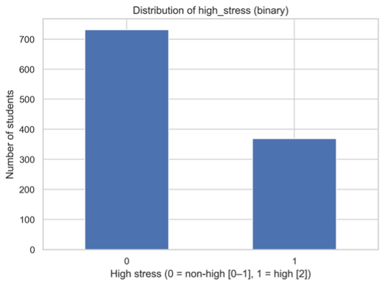
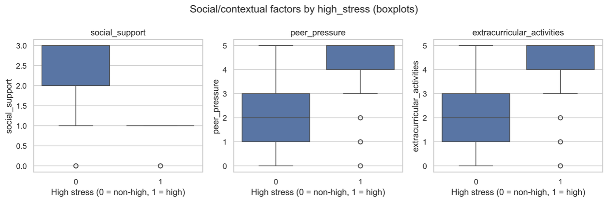
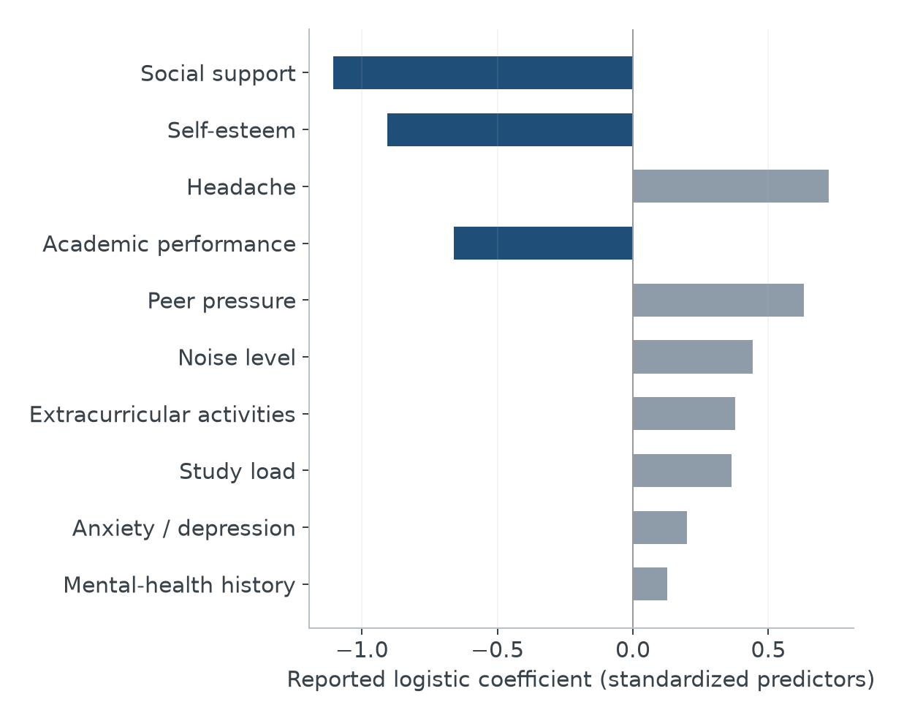
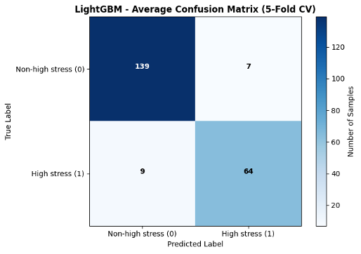
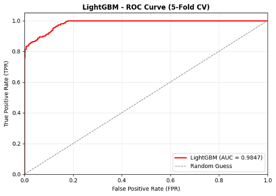

Beyond Workload
Social Support, Self-Esteem, and Student Stress
Academic demands sit alongside social resources, self-evaluations, and everyday difficulties in accounts of student stress. This project examines how those dimensions are associated with a high-stress category and compares a linear classification model with a flexible boosted-tree model.
Looking beyond study load
Students with similar academic demands can report different levels of stress. Which social and psychological dimensions help distinguish those experiencing high stress, and does a nonlinear classifier improve on the pattern captured by logistic regression?
The motivation is a distinction between demands and resources for coping with them. Workload describes one demand, while social support and self-esteem concern different aspects of the student’s circumstances. Considering them jointly asks whether academic pressure alone gives an adequate description of the observed stress pattern, without assuming that every association identifies a cause or remedy.
Stress involves the appraisal of demands relative to coping resources, and those resources are embedded in social and cultural settings (Palsane & Lam, 1996). Studies of college students examine psychological symptoms, academic pressures, and social circumstances together (Saleh et al., 2017; Ramón-Arbués et al., 2020). This multidimensional perspective gives “Beyond Workload” its substantive focus: whether social and psychological resources carry information about high stress beyond academic demands alone.
Research on adolescent stress reduction also directs attention to coping resources (Rew et al., 2014). It motivates examining these dimensions, but evidence from interventions elsewhere does not turn the present cross-sectional comparison into an intervention evaluation.
A student stress classification dataset
The Student Stress Monitoring collection on Kaggle, published by Sultanul Ovi, provides a 1,100-record file with psychological, physical, environmental, academic, and social measures. Each row is a student record with a stress category and 20 predictors. This project uses that file to examine the joint pattern across several dimensions of student experience; it does not assume the sample represents a specific national or university population.
The low and moderate stress categories are combined into “non-high stress” and compared with high stress. The selected predictors include anxiety/depression, self-esteem, mental-health history, headache, noise, academic performance, study load, social support, peer pressure, and extracurricular activities.

View full-size figure
{kind=link}
Predictor selection uses rank-based associations to examine the ordinal measures and their overlap. Anxiety and depression are combined, while the final selection spans psychological characteristics, daily burdens, and social resources. Combining low and moderate stress creates a focused high-stress comparison, but it also discards the distinction between those two lower categories. The models consequently do not estimate a three-level severity progression.
Social resources and pressure in the observed pattern

View full-size figure
{kind=link}
Logistic regression uses standardized predictors to estimate conditional associations with high stress. Social support and self-esteem have the largest negative coefficients; headache and peer pressure have positive coefficients. Academic performance is negatively associated with high stress, while study load has a smaller positive coefficient.

View full-size figure
{kind=link}
The boxplots show how group distributions differ before adjustment; the coefficient plot asks about each predictor conditional on the others. These need not give the same ordering. For example, mental-health history has a much smaller conditional coefficient than social support or self-esteem. Extracurricular activity also accompanies stress in these data, but its association cannot establish that reducing participation would improve well-being.
The negative associations for social support and self-esteem are consistent with literature describing these as coping resources (Hamdan-Mansour & Dawani, 2008; Saleh et al., 2017). They are protective correlates in this dataset, not estimated causal protective effects. The positive headache and peer-pressure coefficients likewise place physical discomfort and social strain alongside coursework. Their interpretation fits a multidimensional account of student distress (Ramón-Arbués et al., 2020), while neither their direction nor their size establishes which condition precedes another.
Linear associations and flexible prediction
LightGBM uses boosted trees to allow nonlinear relationships and interactions. Its evaluation uses five-fold stratified cross-validation and 100 boosting iterations. Unlike a signed logistic coefficient, tree importance measures contribution to the prediction procedure and has no effect direction.
Standardization expresses each logistic predictor in comparable standard-deviation units, while retaining the sign of its relationship with fitted log-odds. Boosted-tree importance has a different meaning: a variable can be useful in repeated splits or in improving prediction without having a single uniform direction. The two models therefore offer complementary descriptions rather than interchangeable rankings of causes.
Both models discriminate strongly within their evaluation settings. LightGBM has precision 0.9195, recall 0.8565, F1 0.8861, and AUC 0.9851. Logistic regression has F1 of 0.900 and recall of 0.892. The boosted model’s higher AUC, compared with approximately 0.976 for logistic regression, does not imply that every threshold-based metric improves.
Discrimination and classification errors

View full-size figure
{kind=link}

View full-size figure
{kind=link}
These estimates do not establish performance in another student population. The model comparison lacks a common independent final evaluation, and feature selection and preprocessing would need to be confined to training folds for a stronger validation.
The confusion matrix concentrates attention on the errors that the ROC curve summarizes less directly. False negatives are high-stress records classified as non-high; false positives reverse that mistake. A high AUC can coexist with either kind of error at a particular threshold. The stronger logistic recall in this comparison illustrates why the model with the largest AUC need not identify the most high-stress cases.
A broader description of student stress
Longitudinal measurement and validation in a clearly defined student population would help determine which patterns persist. Strong prediction within this dataset alone does not establish an effective intervention.
The results motivate studying academic demands together with social and psychological circumstances, rather than interpreting workload in isolation. They do not determine whether support changes stress, stress changes perceived support, or both reflect another condition. Repeated observations and a documented sampling frame would be needed to move from this joint descriptive pattern toward a stronger account of how stress develops.
References
Hamdan-Mansour, A. M., & Dawani, H. A. (2008). Social support and stress among university students in Jordan. International Journal of Mental Health and Addiction, 6(3), 442–450. https://doi.org/10.1007/s11469-007-9112-6
Palsane, M. N., & Lam, D. J. (1996). Stress and coping from traditional Indian and Chinese perspectives. Psychology and Developing Societies, 8(1), 29–53. https://doi.org/10.1177/097133369600800103
Ramón-Arbués, E., Gea-Caballero, V., Granada-López, J. M., Juárez-Vela, R., Pellicer-García, B., & Antón-Solanas, I. (2020). The prevalence of depression, anxiety and stress and their associated factors in college students. International Journal of Environmental Research and Public Health, 17(19), 7001. https://doi.org/10.3390/ijerph17197001
Rew, L., Johnson, K., & Young, C. (2014). A systematic review of interventions to reduce stress in adolescence. Issues in Mental Health Nursing, 35(11), 851–863. https://doi.org/10.3109/01612840.2014.924044
Saleh, D., Camart, N., & Romo, L. (2017). Predictors of stress in college students. Frontiers in Psychology, 8, 19. https://doi.org/10.3389/fpsyg.2017.00019